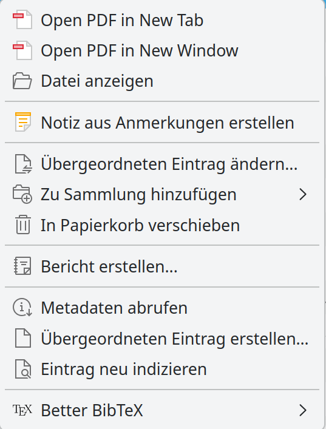
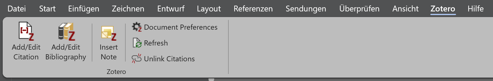
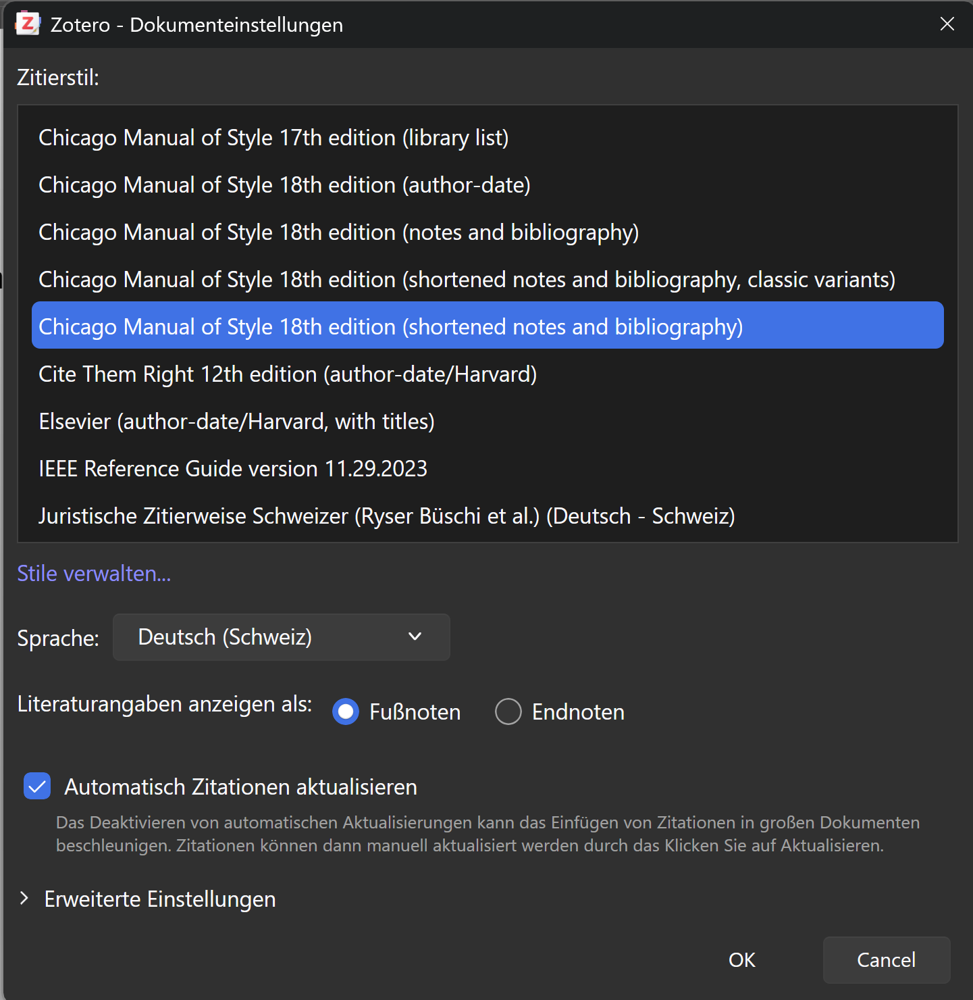
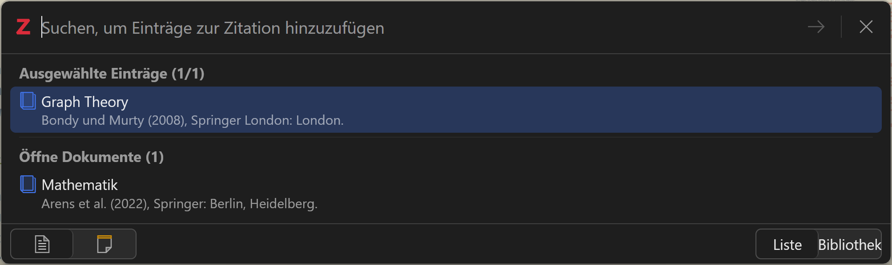
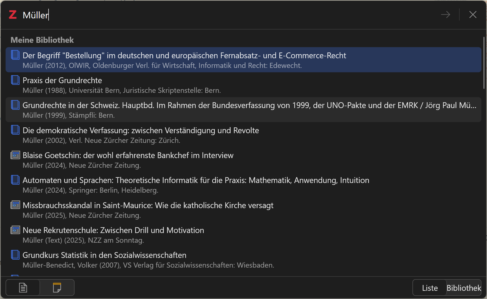
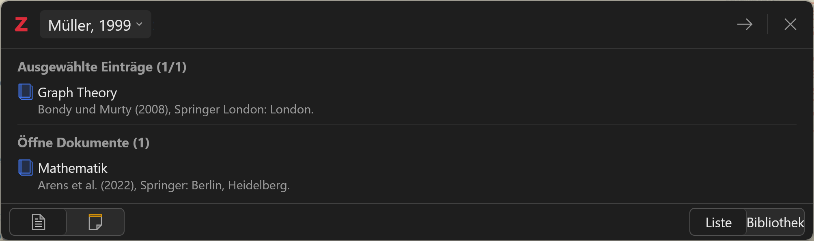
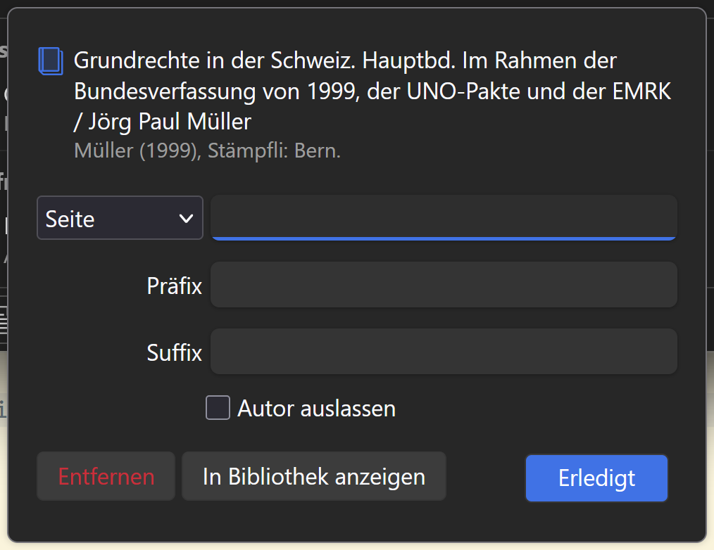
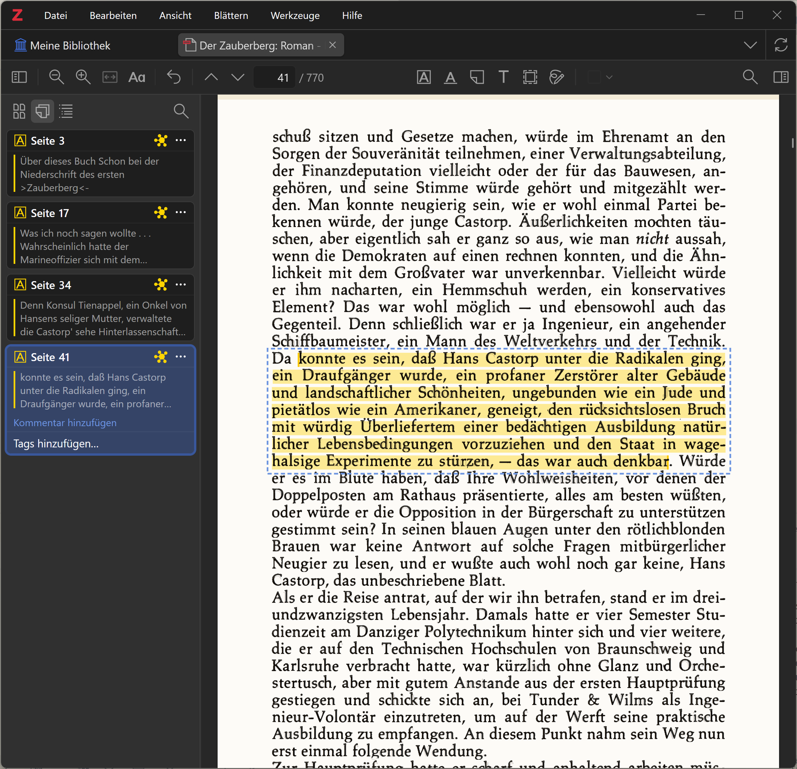
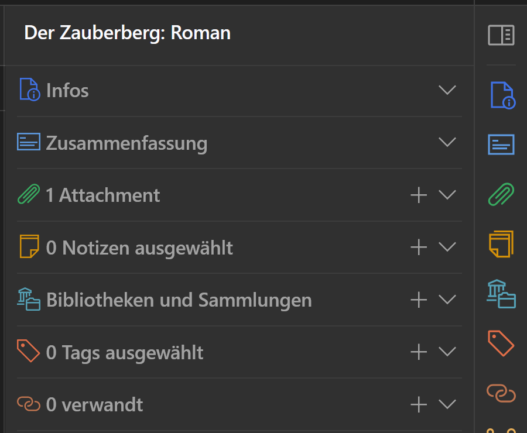

Zotero
Einführung für Maturandinnen und Maturanden im Schuljahr 26/27
Zotero bewirbt sich selber als persönlicher Forschungsassistent. Im gymnasialen Umfeld ist Zotero in erster Linie ein Hilfsmittel, Zitate in Texten korrekt zu formatieren. Darüber hinaus kann Zotero auch als E-Reader mit Zusatzfunktionen zur Verwaltung von Notizen verwendet werden.
Diese Anleitung zeigt für Zotero 9 Schritt für Schritt, wie
- Zotero installiert wird;
- Einträge in die Zotero Bibliothek gemacht werden können;
- Referenzen in einen Text aufgenommen werden, sowie
- Zotero als Wissensdatenbank verwendet werden kann.
1 Zotero installieren und einrichten
Um die Funktionen von Zotero im vollen Umfang zu nutzen, ist es sinnvoll, einen Zotero-Account zu erstellen. Der Account kann auf der Website von Zotero erstellt werden. Wenn der Account nicht ausschliesslich privat genutzt werden soll, ist es sinnvoll, die Schul- bzw. Geschäftsemail zu verwenden. Im Nutzerprofil können auch mehrere Adressen hinterlegt werden. Das ermöglicht es, die eigene Datenbank zu behalten, wenn man eine Institution verlässt.
Nachdem optional ein persönlicher Account erstellt worden ist, kann der Zotero Desktop Client heruntergeladen und installiert werden. Auf der gleichen Seite findet sich auch die Möglichkeit, den Zotero-Connector als Browser Plugin herunterzuladen. Dieses Plugin ist für die Arbeit mit Zotero nicht zwingend erforderlich, vereinfacht aber die Erfassung von Quellen ungemein.
Wenn Zotero installiert ist, kann auf Windows Rechnern über den Menüpunkt ‘Bearbeiten > Einstellungen’, Registerkarte Sync die Synchronisation mit dem eigenen Zotero-Account eingerichtet werden. Auf Mac Rechnern finden sich die Einstellungen unter dem Menü ‘Zotero > Einstellungen’.
2 Einträge in Zotero erstellen und organisieren
Es gibt verschiedene Methoden, wie Einträge in die Zotero Bibliothek aufgenommen werden können. Hier werden die gängigen Methoden Schritt für Schritt mit Beispielen erklärt.
Eintrag mit dem Zotero-Connector erfassen.
Damit Einträge mit dem Zotero-Connector erfasst werden können, muss neben dem Browser auch die Zotero-Desktop-Applikation geöffnet sein. Gearbeitet wird bei (im Hintergrund) geöffneter Zotero-Desktop-Applikation im Browser.
Nach der Installation des Zotero-Connectors für den verwendeten Browser muss dieser via Plugin Manager (in den meisten Browser ein Icon, das wie ein Puzzle Teil aussieht ) an die Menüzeile angepinnt werden. Durch das Anpinnen erscheint in der Menüzeile ein neues Symbol in Form eines grauen Buchstabens ‘Z’.
Für das Beispiel soll der Wikipedia Artikel zu Zotero erfasst werden. Dazu muss die Website geöffnet werden. Wenn die Website offen ist, kann das graue ‘Z’ Symbol angeklickt werden. Beim erstmaligen Anklicken erscheint ein Hinweisfenster. Dieses kann angenommen werden. Anschliessend öffnet sich oben rechts im Browser ein Pop-Up Fenster, das einem mitteilt, dass die Website nach Zotero gespeichert wird und dass ein Snapshot der Website angelegt wird. Ausserdem hat das Symbol für den Zotero Connector eine neue Darstellung erhalten. Neu sieht es wie ein aufgeschlagenes Buch aus. So zeigt der Zotero-Connector an, als welche Kategorie der Eintrag angelegt wird. Im Fall Wikipedia ist das ein Enzyklopädieartikel. Der Zotero-Connector erkennt mehr oder weniger zuverlässig, um was für eine Kategorie von Eintrag es sich handelt. Der Eintrag muss aber in jedem Fall kontrolliert und gegebenenfalls manuell ergänzt und korrigiert werden.
Ebenfalls über den Zotero-Connector können bibliographische Angaben aus Bibliothekskatalogen übernommen werden. Als Beispiel dient hier ein Eintrag im swisscovery Katalog zu Le rouge et le noir. Wenn dieser Eintrag aufgerufen wird, nimmt der Zotero-Connector die Form eines Buches an. Dieser Eintrag wird als Buch angelegt, allerdings ohne Snapshot. Der Zotero-Connector erkennt korrekt, dass die Website von swisscovery ausschliesslich die Metadaten zum Buch zur Verfügung stellt.
Andere Websites funktionieren analog zu diesen beiden Beispielen.
Eintrag mittels eines Identifikators erfassen.
In der Zotero-Desktop-Applikation können Einträge mittels der ISBN, DOI und ähnlicher Identifikatoren erfasst werden. Dazu ist das Zauberstab Icon über der Liste mit den Einträgen anzuklicken. Im sich öffnenden Fenster kann die ISBN eingegeben werden. Zotero sucht mit der ISBN online nach Einträgen mit der entsprechenden ISBN in Bibliothekskatalogen.
Als Beispiel dient hier die ISBN 9783110466201, Ovid, Niklas Holzberg (Hrsg.), Metamorphosen lateinisch-deutsch. Sammlung Tusculum. De Gruyter, 2017.Auch die via ISBN erfassten Einträge müssen unbedingt auf Vollständigkeit und Korrektheit kontrolliert werden.
Hinzufügen von Büchern im Volltext
Gewisse Verlage stellen Bücher auch im Volltext zum Download zur Verfügung. Solche Bücher können entweder direkt über die Website via Zotero Connector hinzugefügt werden oder heruntergeladen und anschliessend mit dem Menü ‘Anhang hinzufügen’ () in Zotero übernommen werden. Abhängig von den in der Datei zur Verfügung stehenden Metadaten, wird der übergeordnete Eintrag automatisch erstellt oder muss manuell erstellt werden. Falls der Eintrag nicht genügend Metadaten zur Verfügung stellt, muss der übergeordnete Eintrag mit Rechtsklick auf das eingefügte PDF manuell erstellt werden. Der entsprechende Dialog sieht folgendermassen aus:

Kontextmenü für PDF in Zotero 9 In diesem Dialog ist der Eintrag ‘Übergeordneter Eintrag erstellen…’ auszuwählen. Im sich öffnenden Dialog ist anschliessend ‘Manueller Eintrag’ auszuwählen. Nach diesem Arbeitsschritt können alle erforderlichen Angaben manuell erfasst werden.
Wie das genau funktioniert, kann am Beispiel Chan, Tsz Nam, und Dingming Wu. Mastering the Academic Writing Mindset: A Guide to Crafting Computer Science Papers. Springer Nature Singapore, 2026. https://doi.org/10.1007/978-981-95-4850-7 ausprobiert werden.
Manueller Eintrag.
Es besteht auch die Möglichkeit, Einträge komplett manuell zu erfassen. Dazu ist das Icon links neben dem Zauberstab (leeres Blatt mit kleinem Plus Symbol) zu verwenden. Wenn dieses Icon angeklickt wird, öffnet sich ein Auswahlmenü mit allen Eintragsarten, welche von Zotero zur Verfügung gestellt werden. Sobald eine Wahl getroffen worden ist, wird ein leerer Eintrag in der gewählten Kategorie angelegt. Die entsprechenden Metadaten können nun von Hand eingegeben werden.
Eine ausführliche Anleitung, wie Einträge in Zotero erfasst werden, wird auf der Website von Zotero zur Verfügung gestellt.
Für die Organisation der Bibliothek stellt Zotero zwei Möglichkeiten zur Verfügung. Die Einträge können in Sammlungen organisiert werden oder mit Tags versehen werden. Beide Möglichkeiten können parallel verwendet werden.
Zotero Sammlungen werden mit einem ähnlichen Icon dargestellt wie Windows Ordner. Dies darf aber nicht über einen grundsätzlichen Unterschied hinwegtäuschen. Während Dateien in Windows Ordnern ausschliesslich in einem Ordner gespeichert sind, stellen Zotero Sammlungen keine Speicherorte dar. Das heisst, Zotero Einträge können in mehreren Sammlungen gleichzeitig zusammengefasst werden. Dies ermöglicht es beispielsweise, einen Eintrag gleichzeitig einer Sammlung ‘Barock’ und ‘Lyrik’ zuzuweisen.
Neue Sammlungen oder Untersammlungen werden durch einen Rechtsklick auf ‘Meine Sammlung’ oder eine bereits bestehende Sammlung angelegt. Im sich öffnenden Kontextmenü kann dann der Eintrag ‘Neue Sammlung’ bzw. ‘Neue Untersammlung’ ausgewählt werden.
Um einen Eintrag mit einem Tag zu versehen, muss dieser in der Bibliothek ausgewählt werden. Ganz am rechten Rand erscheint dann eine Auswahl mit mehreren farbigen Icons. Um einen Tag zu vergeben, ist das Icon, welches wie eine Gepäcketikette aussieht, auszuwählen.
Eine ausführliche Beschreibung für die Organisation einer Zotero Bibliothek findet sich ebenfalls auf der Website von Zotero.
3 Einfügen von Referenzen in Texten
In dieser Anleitung wird beschrieben, wie Referenzen in ein Word Dokument eingefügt werden.
Mit der Installation der Zotero-Desktop-Applikation sollte parallel das Microsoft Word Add-In installiert worden sein. Dieses stellt in Microsoft Word einen neuen Menüeintrag ‘Zotero’ zur Verfügung. Falls dieser Menüpunkt in Word fehlt, kann das Microsoft Word Add-In manuell installiert werden. Dazu sind die Zotero Einstellungen zu öffnen (Bearbeiten -> Einstellungen). Im Einstellungsfenster ist der Tab ‘Zitieren’ auszuwählen. Ganz unten in diesem Tab findet sich ein Button ‘Microsoft Word Add-In installieren’. Durch Anklicken dieses Buttons wird das fehlende Add-In installiert. Allenfalls muss Word neu gestartet werden.
Das Zotero Word Add-In stellt in Word die folgenden Funktionen zur Verfügung:

Die einzelnen Funktionen werden hier der Reihe nach erklärt.
Add/Edit Citation.
Mit dieser Funktion wird eine Referenz im Text eingefügt. Bei der ersten Referenz in einem neuen Text muss vor dem Einfügen der Referenz zusätzlich noch der Zitierstil ausgewählt werden.

Dialog zur Wahl des Zitierstils Hier im Beispiel wird der Stil ‘Chicago Manual of Style 18th edition (shortened notes and bibliography)’ ausgewählt. Die Wahl des Stils ist an dieser Stelle allerdings nicht entscheidend, der Stil kann auch zu einem späteren Zeitpunkt noch geändert werden. Durch die Bestätigung des gewählten Zitierstils gelangt man zur Auswahl der zu zitierenden Referenz.

Dialog zur Auswahl der Referenz in der Darstellung ‘Liste’. In dieser Dialogbox kann neben dem roten ‘Z’ nach einer Referenz in der Zotero Bibliothek gesucht werden. Gesucht werden kann nach Text in allen Feldern der Metadaten.

Suche nach Referenzen, die den Namen Müller enthalten. Durch Anklicken des gewünschten Eintrags wird dieser in Form einer ovalen Textblase in die Suchzeile übernommen.

Der gesuchte Eintrag Müller wurde in die Suchzeile übernommen. Durch das Anklicken der Textblase kann die Referenz präzisiert werden.

Dialogbox zur Präzisierung einer Referenz. Anstelle von Seitenzahlen können auch Abschnitte, Randnoten und ähnliches ausgewählt werden. Falls gewünscht, kann auch das Präfix ‘Vgl.’ vorangestellt werden. Die Details können durch das Drücken der Entertaste bestätigt werden. Dadurch wird der gewählte Eintrag aus Zotero als Referenz in der gewählten Darstellungsform in den Text übernommen.
Falls die Referenz fehlerhaft erfasst wurde, kann sie angepasst werden. Dazu muss zuerst der in Word generierte Referenztext ausgewählt und dann nochmals das Icon ‘Add/Edit Citation’ angeklickt werden. Dies öffnet den Auswahldialog mit getroffener Auswahl.
Es können bei der Auswahl auch mehrere Referenzen gleichzeitig ausgewählt werden.
‘Add/Edit Bibliography’.
Durch Klicken dieses Buttons wird an der Stelle, an der sich der Cursor im Word Dokument befindet, ein Literaturverzeichnis eingefügt.
‘Insert Note’.
In Zotero können Notizen angelegt werden (vgl. Kapitel 4). Mit ‘Insert Note’ kann nach Notizen gesucht und diese in den Text eingefügt werden.
‘Document Preferences’
Hier können im Nachhinein andere Zitierstile ausgewählt werden.
‘Refresh’
Grundsätzlich werden Änderungen von Einträgen in Zotero im Dokument automatisch angepasst. Die ‘Refresh’ Funktion erzwingt in jedem Fall, dass die Einträge aus Zotero neu geladen werden. Es handelt sich also um eine Art Abkürzung oder vielleicht auch eine Vergewisserung, dass die Einträge aktualisiert werden.
Weil Änderungen in Zotero Einträgen grundsätzlich automatisch ins Dokument übernommen werden, sollen Referenzen nicht im Dokument selber angepasst werden.
‘Unlink Citations’
Mit dieser Funktion kann die Verbindung zwischen Dokument und Zotero Datenbank unterbrochen werden. Aktualisierungen von Einträgen in Zotero werden dann nicht mehr in den Text übernommen.
4 Zotero als Wissensdatenbank
Zotero kann auch als E-Reader verwendet werden. Damit löst Zotero das Versprechen ein, ein persönlicher Forschungsassistent zu sein. Welche Unterstützung Zotero damit bietet, wird hier erläutert.
Beim Erfassen von Websites mit Hilfe des Zotero-Connectors wurden, wie im Beispiel gezeigt, nicht nur die Metadaten erfasst, sondern auch ein Snapshot der Website gespeichert. Der Inhalt der Referenz kann nicht nur für Websites, sondern grundsätzlich für alle Eintragsarten gespeichert werden.
So kann ein Eintrag zu einem Buch um ein PDF des Buches ergänzt werden. Dieses PDF kann dann im PDF Reader von Zotero angezeigt werden. Der Zotero PDF Reader stellt dann Werkzeuge zur Verfügung, um Anstreichungen im Text vorzunehmen und diese mit Kommentaren zu versehen.

Die Anstreichungen und Kommentare werden dann als separate Notizen gespeichert. Ausserdem können auch eigenständige Notizen angelegt werden. Dazu können am rechten Rand der Zotero-Desktop-Applikation die Metadaten des Eintrags angezeigt werden.

Mit dem Plus bei Notizen kann eine neue Notiz angelegt werden.
Die so erstellten Notizen können dann mit der Funktion ‘Insert Note’ in den Text übernommen werden.
Eine ausführliche Anleitung zu allen Funktionen findet sich in der Zotero Dokumentation.
5 Weiterführende Links
Die ZHAW unterhält auf ihrer Website mehrere Video Tutorials und Blog-Beiträge zu Zotero:
Das Deutsche Seminar der UZH hat 2024 ein Deomstrationsvideo für Zotero erstellt: